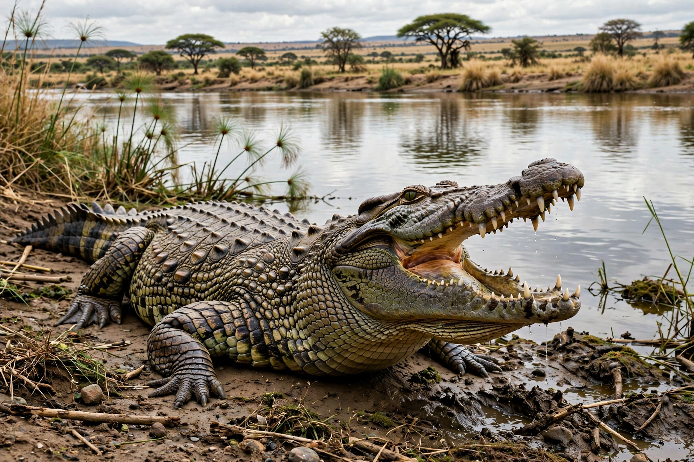

Nile crocodile
The Nile crocodile (Crocodylus niloticus) is a large crocodilian native to freshwater habitats in Africa, where it is widely distributed in sub-Saharan Africa, occurring largely in the central, eastern and southern regions of the continent, and lives in different types of aquatic environments such as lakes, rivers, swamps and marshlands. It is one of the largest reptiles in the world: adult males commonly reach 4–5 metres (13–16 ft) and over 750 kg, with exceptional specimens reported near 6 metres.
| Kingdom | Animalia |
|---|---|
| Order | Crocodilia |
| Family | Crocodylidae |
| Genus | Crocodylus |
| Species | C. niloticus |
| Binomial name | Crocodylus niloticus Laurenti, 1768 |
| Conservation status | Least Concern (IUCN) |

Behaviour and diet
The Nile crocodile is an apex predator and a largely solitary, opportunistic ambush hunter. Juveniles feed on invertebrates and small fish; adults take fish, antelope, young hippopotamuses, zebras (famously at Mara River crossings), and occasionally humans — the species is responsible for hundreds of attacks on people each year, making it one of the most dangerous large animals in Africa. It possesses the strongest bite force of any living animal. Females build mound nests on riverbanks and guard their eggs and hatchlings, a notably high level of parental care among reptiles.
Distribution and status
Although once found throughout the Nile basin and beyond, the species was hunted close to extinction for its skin in the mid-20th century. Regulated farming and protection allowed recovery, and it is now listed as Least Concern, though habitat loss and conflict with humans continue locally. The West African crocodile (C. suchus) was long considered part of this species and was the animal mummified by the ancient Egyptians.
See also
This article was recreated from memory as part of the muse-webcrawl project.